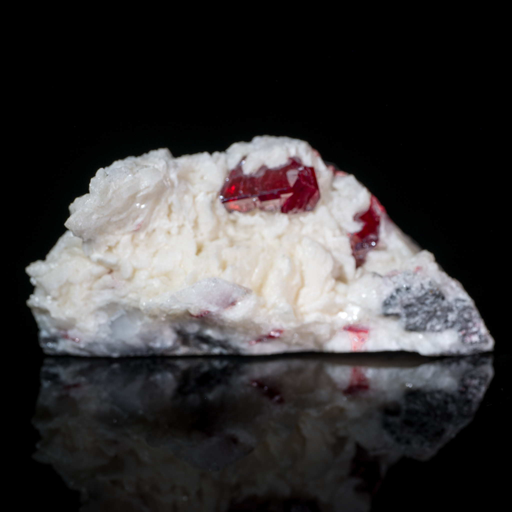
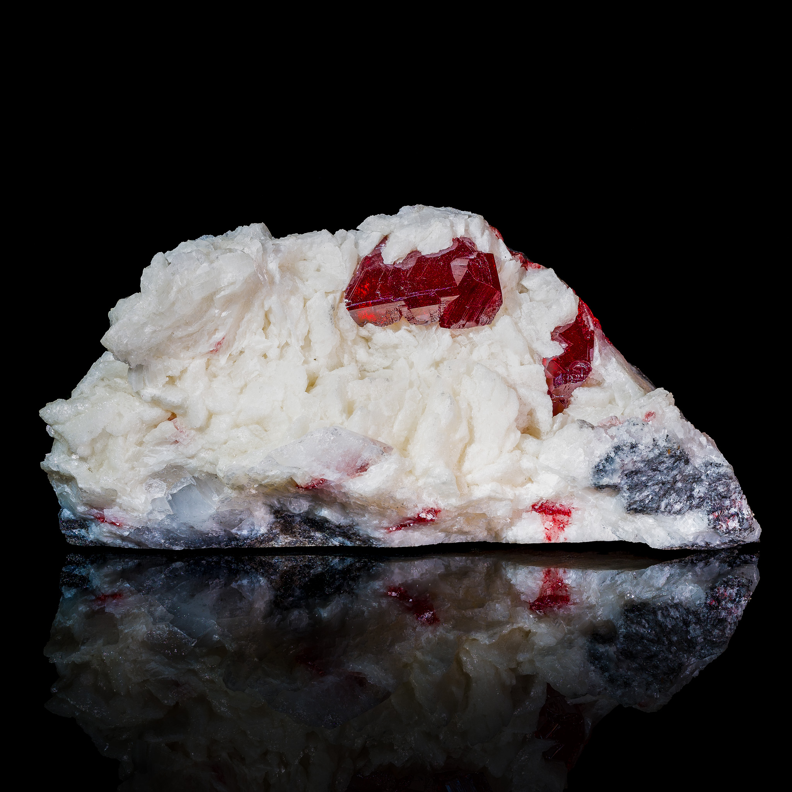

Hyperfocal
Powerful focus stacking. Free, native, open source.

What it does
A camera lens focuses at a single depth plane, and only that plane is perfectly sharp. That's often fine, and having a blurred background can be desirable for subject separation. But sometimes, especially with macro photography, a shallow depth of field is unpleasant and distracting because you'd rather have the entire subject in focus at once. The solution to this problem is focus stacking: shoot many, often dozens or hundreds, of frames each with slightly different focus, and then merge the sharpest parts of each into one image that has everything you care about in focus at once.
Hyperfocal performs that merge step for you. Drop in a folder of frames and it handles every part of the focus stacking process for you - aligning all of the frames to deal with focus breathing and slight shifts, scoring per-pixel sharpness across the stack, and rendering a beautiful result that takes each pixel from the sharpest frames. And because no focus stacking algorithm can perfectly deal with complicated objects having translucency, small projections, and the like, Hyperfocal offers powerful retouching features so you can obtain a flawless result every time.


Highlights
- GPU Accelerated Hyperfocal takes maximum advantage of Apple Silicon, using compute shaders to run its algorithms on the GPU wherever possible. Registration, warping, sharpness scoring, and depth regularization are all GPU-accelerated.
- Two fusion engines A depth-map engine with halo-aware regularization for clean subjects, and Laplacian-pyramid (PMax) fusion for scenes where structures at different depths overlap. Use Hyperfocal's retouching features to combine the strengths of both algorithms in a single image.
- Thoughtful features You shot several stacks in the same folder? No problem, Hyperfocal notices the gap in frame timestamps and offers to import them as separate stacks. Turns out the flash didn't fire on some frames? It notices and offers to exclude the offending images rather than destroy your stack. Hyperfocal was created by an experienced macro photographer familiar with the process and its challenges.
- Retouching that understands stacks Paint from any source frame, jump to the sharpest frame under the brush, blend in the PMax rendering where it produced better results, or paint back to the original fusion.
- Raw in, raw out Supports camera raw (NEF, DNG, CR3, ARW, …) input, working in Display P3 end to end, and produces DNG output. Or you can stick to JPG / TIFF if you prefer.
- Projects and batches Multi-stack projects with per-stack results and retouch state, a queue that fuses every stack in a session, export-all, and a full command-line interface for headless batch work.
Get Hyperfocal
Hyperfocal is free and open source. If you'd prefer to skip the build process and the hassle of keeping it up to date (and give the author a small tip in the process), it is available from the Mac App Store for $4.99.
To build it yourself for free, you'll need Xcode and XcodeGen
(brew install xcodegen):
git clone https://github.com/ethannicholas/hyperfocal.git
cd hyperfocal/App
xcodegen generate
open Hyperfocal.xcodeprojThe command-line tool builds with plain SwiftPM:
swift build -c release
.build/release/hyperfocal-cli fuse shots/* -o stacked.dngThen take a look at the tutorial, which includes a sample image stack for you to try fusing.